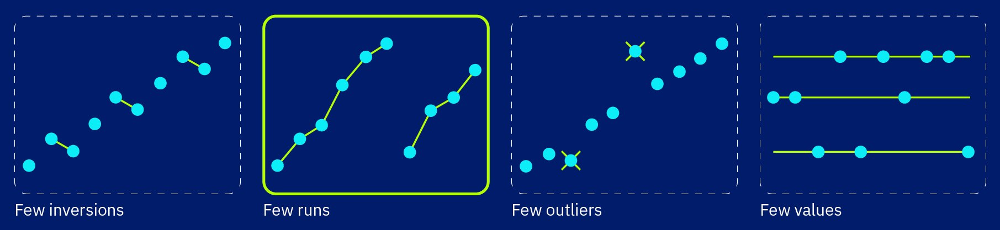
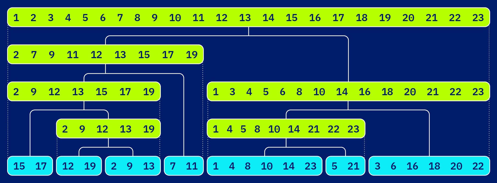

Powersort
Nearly-optimal run-adaptive stable sorting — now powering Python 3.11+
watch it workEvery array hides a
perfectly balanced tree.
Powersort sorts by merging the runs — already-sorted stretches — that real-world data is full of. To decide which runs to merge first, it assigns each boundary between runs a power: its depth in a virtual, perfectly balanced binary tree laid over the array. Watch it drop into place.
1 runs
A single left-to-right scan chops the input into maximal sorted runs (descending runs are reversed on the fly). Nearly-sorted data yields few, long runs — and Powersort gets faster the fewer there are.
2 node powers
Imagine halving the array again and again: the midpoint has power 1, the quarter points power 2, and so on. No tree is ever built — a node's position and depth follow from pure arithmetic on indices.
3 boundary powers
The power of the boundary between two adjacent runs is the depth of the shallowest node lying between their midpoints — computed in a few machine instructions. Low power ⇒ merge late; high power ⇒ merge early.
What is Powersort?
Powersort is a natural run-based mergesort algorithm with provably near-optimal merge cost. It was designed by J. Ian Munro and Sebastian Wild and published at ESA 2018. In Python 3.11, it replaced Timsort's merge policy in CPython, and it is also used beyond CPython (including PyPy and NumPy).
Adaptive to Existing Order
Exploits existing order present in the data, requiring far fewer comparisons on partially-sorted inputs.

Provably Nearly Optimal
Its mathematically grounded node-power merge policy builds merge trees with provable merge cost at most n · H + 2n — sorting with n · H + 3n ≤ n log₂ n + O(n) comparisons, where H is the run-length entropy of the input.

Python 3.11 Default
Adopted in CPython 3.11 as a drop-in improvement over Timsort's original merge strategy, with zero API changes for users.
How the Algorithm Works
Like Timsort, Powersort scans the input for natural runs — maximal ascending (or reversed-descending) ranges. The innovation is in how those runs are merged: instead of Timsort's stack-based heuristic, Powersort uses a carefully computed run-boundary power to schedule merges in a near-optimal order.
Detect Natural Runs
Scan left-to-right. A run is a maximal non-decreasing subsequence
(descending runs are reversed in-place). If a run is shorter than
MIN_RUN (≈ 32–64 elements) it is extended using binary insertion sort.
Compute Node Power
For two adjacent runs A and B in an array of total length n, the node power is computed from their start positions and lengths. Intuitively, it represents the level in a balanced binary tree at which the interval spanned by A ∪ B would first appear.
Maintain a Run Stack
Runs are pushed onto a stack. Before pushing a new run, any pending runs on the stack whose node power is greater than or equal to the new run's power are merged first. This guarantees the merge tree is nearly optimal.
Flush Remaining Runs
After the entire input has been scanned, all remaining runs on the stack are merged right-to-left, completing the sort.
Try it — Powersort in action
Runs are discovered one at a time and kept on a run stack. When a new boundary's power is no larger than the power on top of the stack, the two topmost runs merge — building the merge tree from left to right. Try your own input and watch the policy decide.
Press play to run Powersort.
note: for clarity this demo uses ascending runs only — real implementations also reverse descending runs (and enforce a minimum run length, see step 1 above).
? why it works
The stack keeps boundary powers strictly increasing from bottom to top, so every merge is a node of the merge tree "closed off" as soon as the scan passes it. Runs are touched only when merged — the whole policy costs O(1) extra work per run.
≈ nearly optimal
The resulting merge tree is within a constant number of comparisons per element of the best possible merge order for those runs — Powersort inherits Timsort's galloping merges but provably avoids its unbalanced-merge worst cases.
🐍 in your Python
Since Python 3.11, CPython's built-in list.sort() and
sorted() use Powersort's merge policy — so this exact rule runs
billions of times a day.
Given an array of length n, two adjacent runs starting at position
i and j = i + |A| (where |A| is the length
of run A), the run-boundary power k is the number of leading identical bits in
the binary representations of the fractions
(i + |A|/2) / n and (j + |B|/2) / n.
It can be computed as follows (for a more efficient solution, see below):
import math
def power(run1, run2, n):
i1 = run1[0]; n1 = run1[1]
i2 = run2[0]; n2 = run2[1]
assert n1 >= 1 and n2 >= 1
assert i1 >= 0 and i2 == i1 + n1 and i2 + n2 <= n
a = (i1 + n1/2) / n
b = (i2 + n2/2) / n
l = 0
while math.floor(a * 2**l) == math.floor(b * 2**l):
l += 1
return lA higher node power means the two runs should be merged sooner (at a deeper level of the merge tree). The stack invariant ensures that merges always happen in the right order.
Comparison with Timsort merge policy
| Property | Timsort | Powersort |
|---|---|---|
| Merge policy | Ad-hoc heuristic (4 length-based rules) | Node-power merge policy |
| Optimality guarantee | ≤ 1.5 · OPT + O(n) merge cost | ≤ OPT + O(n) merge cost |
| Worst-case comparisons | 1.5 · n log₂ n + O(n) | n log₂ n + O(n) |
| Adaptive to runs | Yes (but not optimally) | Yes (near-optimal) |
| Algorithm complexity | Complex stack invariants, hard to prove correct | Simple, clean invariant |
| Stable sort | Yes | Yes |
| Extra memory | O(n) | O(n) |
🪲 Timsort's troubled merge policy
Part of the reason why Powersort was so welcomed is the troublesome history of Timsort's original merge policy, which has been a source of bugs and confusion in both Python and Java implementations. For many years, the standard library sorting methods were susceptible to a stack overflow from adversarial inputs!
While Timsort was eventually patched, Powersort's mathematically grounded merge policy elegantly resolves this issue from first principles, making the formal proof for correctness and needed stack size robust and intuitive.
Powersort in Python 3.11
Python's built-in list.sort() and sorted() have used Timsort
since Python 2.3. With Python 3.11 (released October 2022),
the CPython team adopted Powersort's merge strategy, making every Python program that
sorts data an implicit beneficiary of this research.
What changed?
- The merge-decision logic inside Timsort's run-stacking loop was replaced with the node-power computation — a single integer loop needing no floating-point arithmetic.
- Timsort's complex merge invariants (stack-balance checks) were simplified while retaining all existing optimisations such as galloping merges and binary insertion sort for short runs.
- Performance is equivalent or faster across benchmark sets, with measurable wins on adversarial sequences that Timsort handled sub-optimally (see benchmark discussion and bpo-34561).
- Full backwards compatibility: the sort is still stable, in-place (logically), and respects custom key functions and comparison operators.
Try it yourself
# Python 3.11+ uses Powersort under the hood automatically
import sys
print(sys.version) # 3.11.x ...
data = [5, 3, 1, 4, 1, 5, 9, 2, 6]
data.sort() # Powersort at work!
print(data) # [1, 1, 2, 3, 4, 5, 5, 6, 9]Implementations & Code
Reference implementations of Powersort are available in several languages, alongside the production-quality CPython implementation. All links below are to open-source code.
PyPy source (listsort.py)
Powersort has also been adapted by Carl Friedrich Bolz-Tereick for
PyPy.
See the Python source on GitHub in rpython/rlib/listsort.py.
CPython 3.11+ (Objects/listobject.c)
The production C source code powering list.sort() in every
Python 3.11+ installation. Look for powerloop in the source.
Java implementation
A Java implementation suitable for benchmarking against Java's standard
Arrays.sort, also developed by Sebastian Wild as part of the
research artefacts for the ESA 2018 paper.
C++ implementation
Low-level C++ implementation repository with variants useful for experiments and direct comparison against other implementations.
NumPy (numpy/_core/src/npysort/timsort.hpp)
NumPy adopted Powersort's merge strategy in its sort implementation.
See powerloop and found_new_run_ in the source,
introduced via
NumPy PR #29208.
Minimal Python sketch
"""
Minimal illustrative Powersort sketch.
For helper functions, see https://tiny.cc/timsort.
"""
import math
def power(run1, run2, n):
# Compute the "power" of the run boundary.
# Given are two adjacent runs from a list of total length n.
# See listsort.txt for details; code follows CPython.
i1 = run1[0]; n1 = run1[1]
i2 = run2[0]; n2 = run2[1]
a = 2 * i1 + n1
b = a + n1 + n2
l = 0
while True:
l += 1
if a >= n:
assert b >= a
a -= n; b -= n
elif b >= n:
break
assert a < b < n
a <<= 1; b <<= 1
return l
def powersort(a, extend_run=extend_run):
"""
Sort a list using powersort.
This is a slick variant for managing the stack
(no need to update the power inside the stack).
It stores the run-boundary power in the right run,
CPython stores it in the left run.
"""
n = len(a)
i = 0
runs = [] # stack of (start, length, power) tuples
j = extend_run(a, i)
runs.append((i, j-i, 0))
i = j
while i < n:
j = extend_run(a, i)
p = power(runs[-1], (i,j-i), n)
while p <= runs[-1][2]:
merge_topmost_2(a, runs)
runs.append((i,j-i,p))
i = j
while len(runs) >= 2:
merge_topmost_2(a, runs)Publications & Further Reading
The following is a curated list of papers, articles, and resources related to Powersort, and its implementations in various frameworks.
On this page, I collect basic information and links about Powersort. I've been doing this on my personal website, but felt it's time to move it to a dedicated site to make it easier to find and explore, and let other contribute to it.